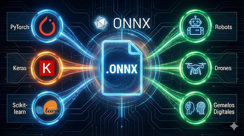
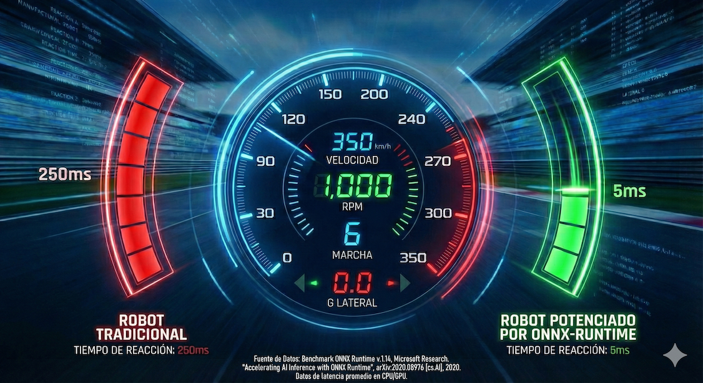

ONNX
Open Neural Network eXchange
LLM's y deep Learning Estandarizado Entrena tu red neuronal en tu framework favorito (PyTorch, TensorFlow). Despliegue Universal Inyecta ese mismo modelo en cualquier hardware sin reescribir una sola línea de código.Tu Ventaja Competitiva Certifícate en el estándar open-source que exigen los gigantes de la industria.

ONNX
Open Neural Network eXchange
Formato de código abierto para representar modelos de machine learning y deep learning de manera estandarizada, que permite la Interoperabilidad entre diferentes frameworks de inteligencia artificial, como PyTorch, TensorFlow, scikit-learn, Caffe2 y otros con aplicaiones en Robótica y Digital Twins
De la simulación al metal en un clic.
Cerrando la brecha entre el Gemelo Digital y la Realidad
Sincronización Perfecta
El archivo .onnx que pruebas en tu entorno virtual es exactamente el que gobierna al robot físico.
Menos Fricción
Reduce la discrepancia "Sim-to-Real" en un 40%. Lo que ves es lo que obtienes.
Iteración Rápida
Falla en la simulación, triunfa en el mundo real. Despliega actualizaciones de IA en segundos.

ONNX
Open Neural Network eXchange
Aceleración Extrema
Logra inferencias hasta 14x más rápidas utilizando la optimización de ONNX Runtime.
Eficiencia Quirúrgica
Modelos optimizados que corren en placas de bajo costo y microcontroladores sin agotar la batería.
Hardware Agnóstico
Exprime el 100% del rendimiento, ya sea en arquitecturas ARM, chips de NVIDIA o procesadores Intel.
